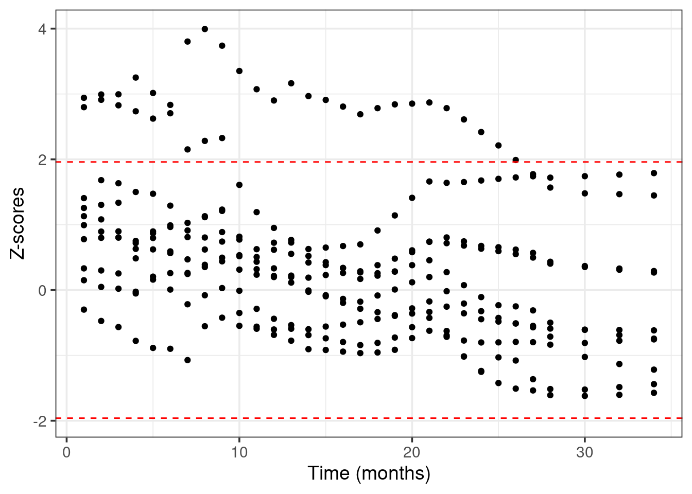
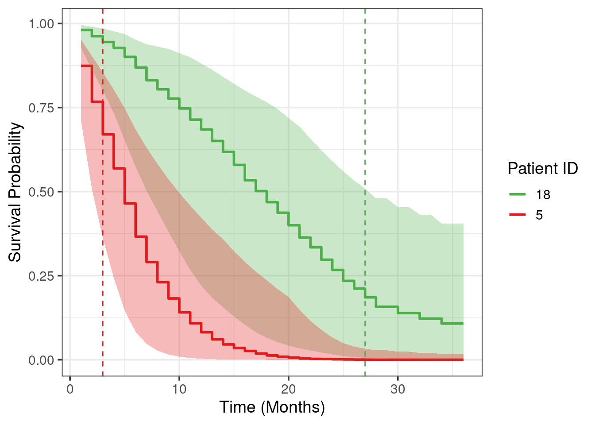
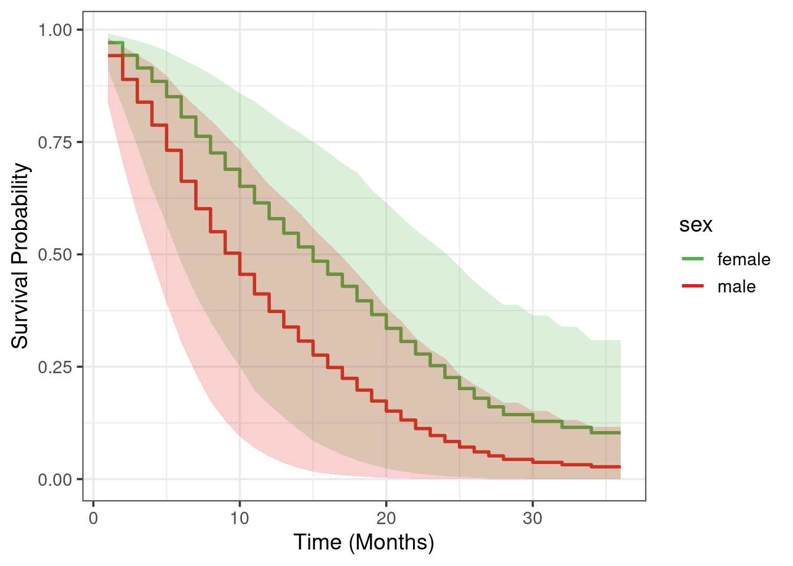

library(mlr3extralearners)
library(mlr3pipelines)
library(mlr3proba)
library(distr6)
library(BART) # 2.9.4
library(dplyr)
library(tidyr)
library(tibble)
library(ggplot2)Survival modeling in mlr3 using Bayesian Additive Regression Trees (BART)
Intro
Here are some interesting reads regarding BART:
- The first BART paper (Chipman, George, and McCulloch 2010).
- The first implementation of BART for survival data (Bonato et al. 2011). This includes fully parametric AFT and Weibull models and the semi-parametric CoxPH regression model.
- The first non-parametric implementation of BART for survival data (R. A. Sparapani et al. 2016)
BARTR package tutorial (R. Sparapani, Spanbauer, and McCulloch 2021)
We incorporated the survival BART model in mlr3extralearners and in this tutorial we will demonstrate how we can use packages like mlr3, mlr3proba and distr6 to more easily manipulate the output predictions, evaluate the learner’s performance and graphically display them.
Libraries
Data
We will use the Lung Cancer Dataset. We convert the time variable from days to months to ease the computational burden:
task_lung = tsk('lung')
d = task_lung$data()
# in case we want to select specific columns to keep
# d = d[ ,colnames(d) %in% c("time", "status", "age", "sex", "ph.karno"), with = FALSE]
d$time = ceiling(d$time/30.44)
task_lung = as_task_surv(d, time = 'time', event = 'status', id = 'lung')
task_lung$label = "Lung Cancer"
Note
- The original
BARTimplementation supports categorical features (factors). This results in different importance scores per each dummy level which doesn’t work well withmlr3. So features of typefactororcharacterare not allowed and we leave it to the user to encode them as they please. - The original
BARTimplementation supports features with missing values. This is totally fine withmlr3as well! In this example, we impute the features to show good ML practice.
In our lung dataset, we encode the sex feature and perform model-based imputation with the rpart regression learner:
po_encode = po('encode', method = 'treatment')
po_impute = po('imputelearner', lrn('regr.rpart'))
pre = po_encode %>>% po_impute
task = pre$train(task_lung)[[1]]
task<TaskSurv:lung> (228 x 10): Lung Cancer
* Target: time, status
* Properties: -
* Features (8):
- int (7): age, inst, meal.cal, pat.karno, ph.ecog, ph.karno, wt.loss
- dbl (1): sexNo missing values in our data:
task$missings() time status age sex inst meal.cal pat.karno ph.ecog
0 0 0 0 0 0 0 0
ph.karno wt.loss
0 0 We partition the data to train and test sets:
set.seed(42)
part = partition(task, ratio = 0.9)Train and Test
We train the BART model and predict on the test set:
# default `ndpost` value: 1000. We reduce it to 50 to speed up calculations in this tutorial
learner = lrn("surv.bart", nskip = 250, ndpost = 50, keepevery = 10, mc.cores = 10)
learner$train(task, row_ids = part$train)
p = learner$predict(task, row_ids = part$test)
p<PredictionSurv> for 23 observations:
row_ids time status crank distr
9 8 TRUE 66.19326 <list[1]>
10 6 TRUE 98.43005 <list[1]>
21 10 TRUE 54.82313 <list[1]>
---
160 13 FALSE 37.82089 <list[1]>
163 10 FALSE 69.63534 <list[1]>
194 8 FALSE 81.13678 <list[1]>See more details about BART’s parameters on the online documentation.
distr
What kind of object is the predicted distr?
p$distrArrdist(23x31x50)
Arrdist dimensions:
- Patients (observations)
- Time points (months)
- Number of posterior draws
Actually the $distr is an active R6 field - this means that some computation is required to create it. What the prediction object actually stores internally is a 3d survival array (can be used directly with no performance overhead):
dim(p$data$distr)[1] 23 31 50This is a more easy-to-understand and manipulate form of the full posterior survival matrix prediction from the BART package ((R. Sparapani, Spanbauer, and McCulloch 2021), pages 34-35).
Warning
Though we have optimized with C++ code the way the Arrdist object is constructed, calling the $distr field can be computationally taxing if the product of the sizes of the 3 dimensions above exceeds ~1 million. In our case, \(23 \times 31 \times 50 = 35650\) so the conversion to an Arrdist via $distr will certainly not create performance issues.
An example using the internal prediction data: get all the posterior probabilities of the 3rd patient in the test set, at 12 months (1 year):
p$data$distr[3, 12, ] [1] 0.26546909 0.27505937 0.21151435 0.46700513 0.26178380 0.24040003
[7] 0.29946469 0.52357780 0.40833108 0.40367780 0.27027392 0.31781286
[13] 0.54151844 0.34460027 0.41826554 0.41866367 0.33694401 0.34511270
[19] 0.47244492 0.49423660 0.42069678 0.20095489 0.48696980 0.48409357
[25] 0.35649439 0.47969355 0.16355660 0.33728105 0.40245228 0.42418033
[31] 0.36336145 0.48181667 0.51858238 0.49635078 0.37238179 0.26694030
[37] 0.52219952 0.48992897 0.08572207 0.30306005 0.33881682 0.33463870
[43] 0.29102074 0.43176131 0.38554545 0.38053756 0.36808776 0.13772665
[49] 0.21898264 0.14552514Working with the $distr interface and Arrdist objects is very efficient as we will see later for predicting survival estimates.
Tip
In survival analysis, \(S(t) = 1 - F(t)\), where \(S(t)\) the survival function and \(F(t)\) the cumulative distribution function (cdf). The latter can be interpreted as risk or probability of death up to time \(t\).
We can verify the above from the prediction object:
surv_array = 1 - distr6::gprm(p$distr, "cdf") # 3d array
testthat::expect_equal(p$data$distr, surv_array)crank
crank is the expected mortality (Sonabend, Bender, and Vollmer 2022) which is the sum of the predicted cumulative hazard function (as is done in random survival forest models). Higher values denote larger risk. To calculate crank, we need a survival matrix. So we have to choose which 3rd dimension we should use from the predicted survival array. This is what the which.curve parameter of the learner does:
learner$param_set$get_values()$which.curve[1] 0.5The default value (\(0.5\) quantile) is the median survival probability. It could be any other quantile (e.g. \(0.25\)). Other possible values for which.curve are mean or a number denoting the exact posterior draw to extract (e.g. the last one, which.curve = 50).
Feature importance
Default score is the observed count of each feature in the trees (so the higher the score, the more important the feature):
learner$param_set$values$importance[1] "count"learner$importance() sex meal.cal inst pat.karno ph.karno wt.loss age ph.ecog
7.84 7.46 7.08 6.76 6.60 6.46 5.48 5.42 MCMC Diagnostics
BART uses internally MCMC (Markov Chain Monte Carlo) to sample from the posterior survival distribution. We need to check that MCMC has converged, meaning that the chains have reached a stationary distribution that approximates the true posterior survival distribution (otherwise the predictions may be inaccurate, misleading and unreliable).
We use Geweke’s convergence diagnostic test as it is implemented in the BART R package. We choose 10 random patients from the train set to evaluate the MCMC convergence.
# predictions on the train set
p_train = learner$predict(task, row_ids = part$train)
z_list = list()
# choose 10 patients from the train set randomly
for (patient_id in sample(length(part$train), 10)) {
# matrix with columns => time points and rows => posterior draws
post_surv = 1 - t(distr6::gprm(p_train$distr[patient_id], "cdf")[1,,])
z_list[[patient_id]] = BART::gewekediag(post_surv)$z # get the z-scores
}
# plot the z scores vs time for all patients
dplyr::bind_rows(z_list) %>%
tidyr::pivot_longer(cols = everything()) %>%
mutate(name = as.numeric(name)) %>%
ggplot(aes(x = name, y = value)) +
geom_point() +
labs(x = "Time (months)", y = "Z-scores") +
# add critical values for a = 0.05
geom_hline(yintercept = 1.96, linetype = 'dashed', color = "red") +
geom_hline(yintercept = -1.96, linetype = 'dashed', color = "red") +
theme_bw(base_size = 14)
Performance (test set)
We will use the following survival metrics:
- Integrated Brier Score (requires a survival distribution prediction -
distr) - Right-Censored Log loss (requires a survival distribution prediction -
distr) - Uno’s C-index (requires a continuous ranking score prediction -
crank)
For the first two measures we will use the ERV (Explained Residual Variation) version, which standardizes the scores against a Kaplan-Meier (KM) baseline (Sonabend et al. 2022). This means that values close to \(0\) represent performance similar to a KM model, negative values denote worse performance than KM and \(1\) is the absolute best possible score.
measures = list(
msr("surv.graf", ERV = TRUE),
msr("surv.rcll", ERV = TRUE),
msr("surv.cindex", weight_meth = "G2", id = "surv.cindex.uno")
)
for (measure in measures) {
print(p$score(measure, task = task, train_set = part$train))
} surv.graf
-0.09950096
surv.rcll
-0.02622117
surv.cindex.uno
0.551951
Note
All metrics use by default the median survival distribution from the 3d array, no matter what is the which.curve argument during the learner’s construction.
Resampling
Performing resampling with the BART learner is very easy using mlr3.
We first stratify the data by status, so that in each resampling the proportion of censored vs un-censored patients remains the same:
task$col_roles$stratum = 'status'
task$strata N row_id
1: 165 1,2,4,5,7,8,...
2: 63 3, 6,38,68,71,83,...rr = resample(task, learner, resampling = rsmp("cv", folds = 5), store_backends = TRUE)INFO [13:00:29.593] [mlr3] Applying learner 'surv.bart' on task 'lung' (iter 1/5)
INFO [13:00:31.355] [mlr3] Applying learner 'surv.bart' on task 'lung' (iter 2/5)
INFO [13:00:33.035] [mlr3] Applying learner 'surv.bart' on task 'lung' (iter 3/5)
INFO [13:00:35.067] [mlr3] Applying learner 'surv.bart' on task 'lung' (iter 4/5)
INFO [13:00:36.691] [mlr3] Applying learner 'surv.bart' on task 'lung' (iter 5/5)No errors or warnings:
rr$errorsEmpty data.table (0 rows and 2 cols): iteration,msgrr$warningsEmpty data.table (0 rows and 2 cols): iteration,msgPerformance in each fold:
rr$score(measures) task_id learner_id resampling_id iteration surv.graf surv.rcll
1: lung surv.bart cv 1 -0.312614598 -0.102013166
2: lung surv.bart cv 2 -0.103181391 -0.009579343
3: lung surv.bart cv 3 0.001448263 0.338851363
4: lung surv.bart cv 4 -0.044161171 0.003691073
5: lung surv.bart cv 5 -0.043129352 0.157902047
surv.cindex.uno
1: 0.5869665
2: 0.5502903
3: 0.6178001
4: 0.6157215
5: 0.5688389
Hidden columns: task, learner, resampling, predictionMean cross-validation performance:
rr$aggregate(measures) surv.graf surv.rcll surv.cindex.uno
-0.1003276 0.0777704 0.5879235 Uncertainty Quantification in Survival Prediction
We will choose two patients from the test set and plot their survival prediction posterior estimates.
Let’s choose the patients with the worst and the best survival time:
death_times = p$truth[,1]
sort(death_times) [1] 3 5 5 6 6 6 7 8 8 8 8 10 10 10 12 12 12 13 15 16 17 18 27worst_indx = which(death_times == min(death_times))[1] # died first
best_indx = which(death_times == max(death_times))[1] # died last
patient_ids = c(worst_indx, best_indx)
patient_ids # which patient IDs[1] 5 18death_times = death_times[patient_ids]
death_times # 1st is worst, 2nd is best[1] 3 27Subset Arrdist to only the above 2 patients:
arrd = p$distr[patient_ids]
arrdArrdist(2x31x50) We choose time points (in months) for the survival estimates:
months = seq(1, 36) # 1 month - 3 yearsWe use the $distr interface and the $survival property to get survival probabilities from an Arrdist object as well as the quantile credible intervals (CIs). The median survival probabilities can be extracted as follows:
med = arrd$survival(months) # 'med' for median
colnames(med) = paste0(patient_ids, "_med")
med = as_tibble(med) %>% add_column(month = months)
head(med)# A tibble: 6 × 3
`5_med` `18_med` month
<dbl> <dbl> <int>
1 0.874 0.981 1
2 0.767 0.962 2
3 0.670 0.945 3
4 0.569 0.927 4
5 0.465 0.901 5
6 0.366 0.869 6We can briefly verify model’s predictions: 1st patient survival probabilities on any month are lower (worst) compared to the 2nd patient.
Note that subsetting an Arrdist (3d array) creates a Matdist (2d matrix), for example we can explicitly get the median survival probabilities:
matd_median = arrd[, 0.5] # median
head(matd_median$survival(months)) # same as with `arrd` [,1] [,2]
1 0.8741127 0.9808363
2 0.7670382 0.9621618
3 0.6701276 0.9450867
4 0.5688809 0.9272284
5 0.4647686 0.9007042
6 0.3660939 0.8687270Using the mean posterior survival probabilities or the ones from the last posterior draw is also possible and can be done as follows:
matd_mean = arrd[, "mean"] # mean (if needed)
head(matd_mean$survival(months)) [,1] [,2]
1 0.8652006 0.9748463
2 0.7533538 0.9521817
3 0.6560050 0.9293229
4 0.5623555 0.9051549
5 0.4750038 0.8758896
6 0.3815333 0.8360373matd_50draw = arrd[, 50] # the 50th posterior draw
head(matd_50draw$survival(months)) [,1] [,2]
1 0.9178342 0.9920982
2 0.8424195 0.9842589
3 0.7732014 0.9764815
4 0.7096707 0.9687656
5 0.6029119 0.9495583
6 0.5122132 0.9307318To get the CIs we will subset the Arrdist using a quantile number (0-1), which extracts a Matdist based on the cdf. The survival function is 1 - cdf, so low and upper bounds are reversed:
low = arrd[, 0.975]$survival(months) # 2.5% bound
high = arrd[, 0.025]$survival(months) # 97.5% bound
colnames(low) = paste0(patient_ids, "_low")
colnames(high) = paste0(patient_ids, "_high")
low = as_tibble(low)
high = as_tibble(high)The median posterior survival probabilities for the two patient of interest and the corresponding CI bounds in a tidy format are:
surv_tbl =
bind_cols(low, med, high) %>%
pivot_longer(cols = !month, values_to = "surv",
names_to = c("patient_id", ".value"), names_sep = "_") %>%
relocate(patient_id)
surv_tbl# A tibble: 72 × 5
patient_id month low med high
<chr> <int> <dbl> <dbl> <dbl>
1 5 1 0.713 0.874 0.953
2 18 1 0.929 0.981 0.996
3 5 2 0.508 0.767 0.903
4 18 2 0.863 0.962 0.991
5 5 3 0.362 0.670 0.855
6 18 3 0.801 0.945 0.985
7 5 4 0.244 0.569 0.804
8 18 4 0.734 0.927 0.977
9 5 5 0.146 0.465 0.748
10 18 5 0.654 0.901 0.969
# ℹ 62 more rowsWe draw survival curves with the uncertainty for the survival probability quantified:
my_colors = c("#E41A1C", "#4DAF4A")
names(my_colors) = patient_ids
surv_tbl %>%
ggplot(aes(x = month, y = med)) +
geom_step(aes(color = patient_id), linewidth = 1) +
xlab('Time (Months)') +
ylab('Survival Probability') +
geom_ribbon(aes(ymin = low, ymax = high, fill = patient_id),
alpha = 0.3, show.legend = F) +
geom_vline(xintercept = death_times[1], linetype = 'dashed', color = my_colors[1]) +
geom_vline(xintercept = death_times[2], linetype = 'dashed', color = my_colors[2]) +
theme_bw(base_size = 14) +
scale_color_manual(values = my_colors) +
scale_fill_manual(values = my_colors) +
guides(color = guide_legend(title = "Patient ID"))
Partial Dependence Plot
We will use a Partial Dependence Plot (PDP) (Friedman 2001) to visualize how much different are males vs females in terms of their average survival predictions across time.
Note
PDPs assume that features are independent. In our case we need to check that sex doesn’t correlate with any of the other features used for training the BART learner. Since sex is a categorical feature, we fit a linear model using as target variable every other feature in the data (\(lm(feature \sim sex)\)) and conduct an ANOVA (ANalysis Of VAriance) to get the variance explained or \(R^2\). The square root of that value is the correlation measure we want.
# code from https://christophm.github.io/interpretable-ml-book/ale.html
mycor = function(cnames, data) {
x.num = data[, cnames[1], with = FALSE][[1]]
x.cat = data[, cnames[2], with = FALSE][[1]]
# R^2 = Cor(X, Y)^2 in simple linear regression
sqrt(summary(lm(x.num ~ x.cat))$r.squared)
}
cnames = c("sex")
combs = expand.grid(y = setdiff(colnames(d), "sex"), x = cnames)
combs$cor = apply(combs, 1, mycor, data = task$data()) # use the train set
combs y x cor
1 time sex 0.12941337
2 status sex 0.24343282
3 age sex 0.12216709
4 inst sex 0.07826337
5 meal.cal sex 0.18389545
6 pat.karno sex 0.04132443
7 ph.ecog sex 0.02564987
8 ph.karno sex 0.01702471
9 wt.loss sex 0.13431983sex doesn’t correlate strongly with any other feature, so we can compute the PDP:
# create two datasets: one with males and one with females
# all other features remain the same (use train data, 205 patients)
d = task$data(rows = part$train) # `rows = part$test` to use the test set
d$sex = 1
task_males = as_task_surv(d, time = 'time', event = 'status', id = 'lung-males')
d$sex = 0
task_females = as_task_surv(d, time = 'time', event = 'status', id = 'lung-females')
# make predictions
p_males = learner$predict(task_males)
p_females = learner$predict(task_females)
# take the median posterior survival probability
surv_males = p_males$distr$survival(months) # patients x times
surv_females = p_females$distr$survival(months) # patients x times
# tidy up data: average and quantiles across patients
data_males =
apply(surv_males, 1, function(row) {
tibble(
low = quantile(row, probs = 0.025),
avg = mean(row),
high = quantile(row, probs = 0.975)
)
}) %>%
bind_rows() %>%
add_column(sex = 'male', month = months, .before = 1)
data_females =
apply(surv_females, 1, function(row) {
tibble(
low = quantile(row, probs = 0.025),
avg = mean(row),
high = quantile(row, probs = 0.975)
)
}) %>%
bind_rows() %>%
add_column(sex = 'female', month = months, .before = 1)
pdp_tbl = bind_rows(data_males, data_females)
pdp_tbl# A tibble: 72 × 5
sex month low avg high
<chr> <int> <dbl> <dbl> <dbl>
1 male 1 0.836 0.942 0.981
2 male 2 0.704 0.889 0.963
3 male 3 0.587 0.839 0.943
4 male 4 0.488 0.788 0.924
5 male 5 0.392 0.732 0.897
6 male 6 0.304 0.663 0.860
7 male 7 0.234 0.601 0.829
8 male 8 0.172 0.550 0.799
9 male 9 0.130 0.503 0.766
10 male 10 0.0945 0.455 0.733
# ℹ 62 more rowsmy_colors = c("#E41A1C", "#4DAF4A")
names(my_colors) = c('male', 'female')
pdp_tbl %>%
ggplot(aes(x = month, y = avg)) +
geom_step(aes(color = sex), linewidth = 1) +
xlab('Time (Months)') +
ylab('Survival Probability') +
geom_ribbon(aes(ymin = low, ymax = high, fill = sex), alpha = 0.2, show.legend = F) +
theme_bw(base_size = 14) +
scale_color_manual(values = my_colors) +
scale_fill_manual(values = my_colors)
References
Bonato, Vinicius, Veerabhadran Baladandayuthapani, Bradley M. Broom, Erik P. Sulman, Kenneth D. Aldape, and Kim Anh Do. 2011. “Bayesian ensemble methods for survival prediction in gene expression data.” Bioinformatics 27 (3): 359–67. https://doi.org/10.1093/BIOINFORMATICS/BTQ660.
Chipman, Hugh A, Edward I George, and Robert E McCulloch. 2010. “BART: BAYESIAN ADDITIVE REGRESSION TREES.” The Annals of Applied Statistics 4 (1): 266–98. http://www.jstor.org/stable/27801587.
Friedman, Jerome H. 2001. “Greedy function approximation: a gradient boosting machine.” Annals of Statistics, 1189–1232. https://doi.org/10.1214/aos/1013203451.
Sonabend, Raphael, Andreas Bender, and Sebastian Vollmer. 2022. “Avoiding C-hacking when evaluating survival distribution predictions with discrimination measures.” Edited by Zhiyong Lu. Bioinformatics, July. https://doi.org/10.1093/BIOINFORMATICS/BTAC451.
Sonabend, Raphael, Florian Pfisterer, Alan Mishler, Moritz Schauer, Lukas Burk, Sumantrak Mukherjee, and Sebastian Vollmer. 2022. “Flexible Group Fairness Metrics for Survival Analysis,” May. https://doi.org/10.48550/arxiv.2206.03256.
Sparapani, Rodney A., Brent R. Logan, Robert E. McCulloch, and Purushottam W. Laud. 2016. “Nonparametric survival analysis using Bayesian Additive Regression Trees (BART).” Statistics in Medicine 35 (16): 2741–53. https://doi.org/10.1002/SIM.6893.
Sparapani, Rodney, Charles Spanbauer, and Robert McCulloch. 2021. “Nonparametric Machine Learning and Efficient Computation with Bayesian Additive Regression Trees: The BART R Package.” Journal of Statistical Software 97 (1): 1–66. https://doi.org/10.18637/JSS.V097.I01.